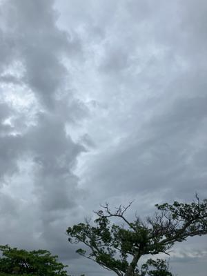
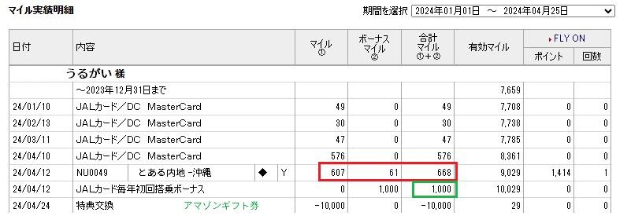
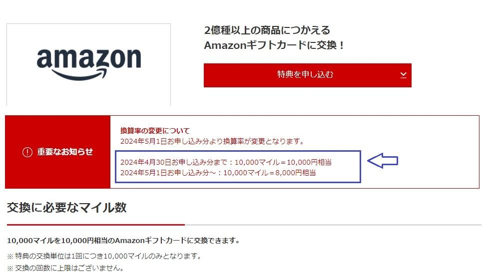

うるがいの話 ある日
最新: ラッキーなこと【うるがいの話 ある日】とは 一日だけのプログです
『うるがいの話』の最新一日だけのプログで、通信料が少なく経済的だ。カニの画像をクリックすると全ての日付が載る『うるがいの話』サイトを表示します
|
|
【うるがいの話】 うるがい(ｳﾙｶﾞｲ urugai)とは、『もずくがに』の名前でとても大きくなります。 |
|---|---|
|
|
【カミマヤーの話】 猫のことを方言でマヤーといいます。カミマヤー（kamimayaa）とは、神の猫のことです。 |
|
【たながぁの音楽】 たながぁ（ﾀﾅｶﾞｰ tanagaa）とは手長えびのことで、何種類かあり大きいのは車 エビぐらいになります。 |

|
【ぶながぁの話】 ぶながぁ(ﾌﾞﾅｶﾞｰ bunagaa)とは、赤い髪の毛、赤い身体、そして身長は１ｍ２０ｃｍ ぐらい、川の蟹を食べているの目撃された。場所は沖縄県国頭郡大宜味村のと ある村僕の隣近所に住んでいる爺さんから、聞いた話です。 |
|
|
【ギーマの話】 ギーマ(giima)とは、山原の里山に咲くスズランに似た、 花を付けます。実は食べられます、 気が付くと口の周りが紫になっています。 |
2024年04月27日 (土）ラッキーなこと
15:17

『有効期限をむかえるマイルをお持ちのお客さまへ』とメールが、来た。フ
ムフム、保有マイルの期限を確認する。おー！、なんと６月末で９千マイル
の有効期限になっている。どうしよう？、誰かがアマゾンギフト券に交換し
たら？と言う。ホー、ネットで『ＪＡＬ マイル アマゾンギフト券交換』
と検索する。なんと、一万マイル単位で交換とある、ん・・・、１万９６マ
イル！、ラッキー、内地から帰った時に乗った６６８マイルの加算でなんと
か、交換できる。

また、５月からは、換算率が１万円が、８千円になるとある！。直ぐに交換
した。なんか、うれしかった。つくづく、運がいい人である。

今日の天気予報は、一日中雨だったような・・、明け方はかなりの雨だった
が、７時過ぎからは雨は上がり青空も見えた。ゴールデンウィーク入り沖縄
に来た観光客もラッキーに違いない。
１５時１０分 ビットコインの総資産 ￥２８、９４９（↓２０４）